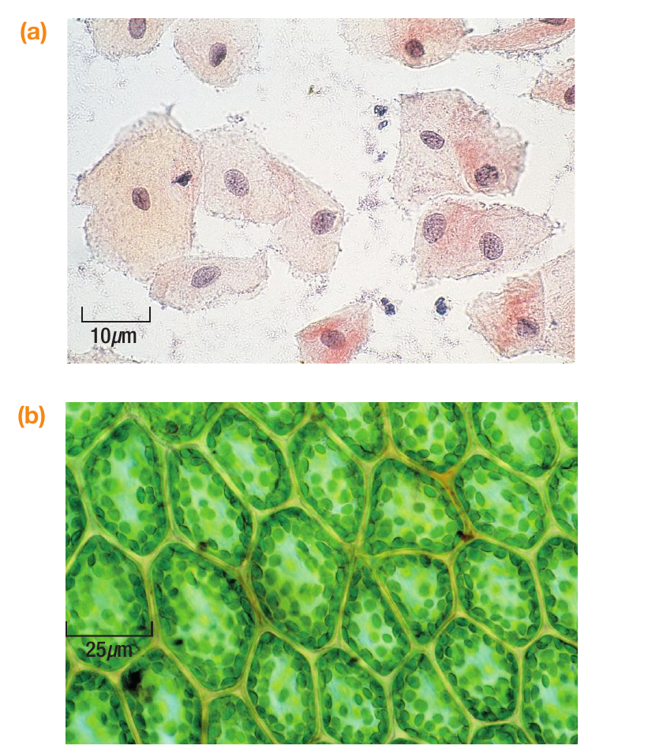

Write three observations only. Shape, colour, boundary, pattern or scale.
Cell biology
01
What can cell structures tell us?
Move from a simplified diagram to biological evidence, then write and calculate with GCSE precision.
50 minutesPearson pages 4-6 and 23Self-assessment
Retrieval | 5 minutes
5
Draw first. Then diagnose.
Work alone and without notes. Keep the first attempt visible.
Draw either an animal cell or a plant cell. Label every structure you remember.
State the function of the nucleus and mitochondria.
Give one structure found in plant cells but not animal cells.
Convert 0.04 mm into micrometres.
Get started
Use simple outlines. Add labels with straight ruled lines.
Build understanding
Structure names are nouns. Function statements begin with an action such as controls, releases, or absorbs.
Go further
Beside each label, state whether the structure would be visible with a light microscope.

Project Zero routine
See. Think. Wonder.
Keep observation separate from interpretation. Every interpretation must point back to something visible.
Which image is animal tissue and which is plant tissue? What visible evidence supports you?
What can the image not tell us? Write one question that the next model must answer.
Think: 20 seconds silently. Product: three headed notes. Feed forward: star one Wonder question and return to it on the model-limits screen.
Get started
In See, avoid cell names. Record only what your eyes can detect.
Build understanding
Use: I think image __ is __ because I can see __.
Go further
Use the scale bars to compare the approximate widths of cells in the two images.
Explicit instruction
A model organises what matters
The diagram combines structures that may not all be visible at once. It is a scientific model, not a photograph.
1
Both cell types contain a nucleus, cytoplasm, cell membrane, mitochondria and ribosomes.
2
Plant cells also have a cellulose cell wall and a permanent vacuole.
3
Photosynthetic plant cells contain chloroplasts. Root cells usually do not.
Get started
Name the outside boundary before moving inwards.
Build understanding
Use the shared structures first, then add plant-only structures.
Go further
Explain why describing every plant cell as containing chloroplasts would be inaccurate.
Scientific models
Do not claim more than the image shows
A labelled model combines established knowledge. A micrograph records what the microscope resolved in one specimen. Return to the class's starred Wonder question.
Model
Useful for organising structures and functions.
Image
Useful for shape, arrangement, scale and visible boundaries.
Limit
Ribosomes are too small to resolve using a light microscope.
Live modelling | I do
Build a paired comparison
Visualiser first
Write: “Plant cells have a wall, unlike animal cells.” Ask what this does and does not earn. Reject “the wall helps the plant”, then narrate the precise replacement.
Both animal and plant cells contain a cell membrane, which controls movement of substances into and out of the cell.
However, plant cells also contain a cellulose cell wall. This maintains cell shape and provides support.
Photosynthetic plant cells contain chloroplasts, where light energy is absorbed for photosynthesis, whereas animal cells do not.
Decide“Compare” means both cell types appear in each point.
Reject“Helps it” hides the biological mechanism.
CorrectQualify chloroplasts: photosynthetic plant cells.
Get started
Use: Both cells contain __, which __.
Build understanding
Follow with: However, plant cells also contain __. This __.
Go further
Rewrite the final sentence so it distinguishes photosynthetic and non-photosynthetic plant cells.
Worked, paired, faded
Keep units under control
Magnification
image size ÷ actual size
Image size = 30 mm; magnification = 600
Actual size = 30 ÷ 600 = 0.05 mm
0.05 mm × 1000 = 50 micrometres
Get started
First calculate the actual size in millimetres.
Build understanding
1 mm = 1000 micrometres. Multiply the millimetre answer by 1000.
Go further
Estimate the answer first. Use it to reject an impossible calculator result.
Everyone responds
Which statement is fully accurate?
Choose simultaneously on mini-whiteboards or select an answer.
At least 80% secure: continue. Otherwise return to the comparison model and recheck with a root cell.
Recheck on whiteboards: A root cell micrograph shows no chloroplasts or mitochondria. Write one sentence that accurately distinguishes absence from invisibility.
We do, then you do
Use the textbook as a source
Open Pearson printed page 23. Work through Question 5 in a deliberate sequence.
Jointly improve one label and function from Question 5a.
Complete the remaining labels independently.
Use Question 5b to write three paired differences.
Replace one vague function with a precise biological action.
Get started
Complete the shared structures before the plant-only structures.
Build understanding
Use one comparison per sentence. Include both cell types.
Go further
Explain why a diagram may show an organelle that is not visible in the micrograph.
Teacher-marked evidenceComplete independently. Preserve the first response and submit the evidence sheet.
Independent | 12 minutes
Explain why the claim is incomplete
“Plant and animal cells are almost identical except that plant cells contain chloroplasts.”
Write a paired biological explanation using at least three structures.
Link two structures to their functions.
Complete the scale calculation and show units.
Assessment boundary
No live support is available during the independent evidence. Attempt every section.
After submission
The teacher records knowledge, application and mathematics separately.
Next lesson
You will respond to one feedback action before starting new content.
Self-assessmentLocate evidence for each criterion, then make one visible correction. Do not award a grade.
Response | 5 minutes
Find the evidence in your own answer
Annotate your response using K, A and M, then improve one sentence or calculation.
K Correct structures and functions are named.
A Each comparison includes both cell types.
A At least two functions are explained.
M Working and units are visible.
Response: Circle the correction that most improves biological precision.
Exit | 3 minutes
Separate absence from invisibility
A mitochondrion is not visible in a cheek-cell micrograph. Explain why this does not prove that the cell has no mitochondria.
No notesTwo sentencesHand in